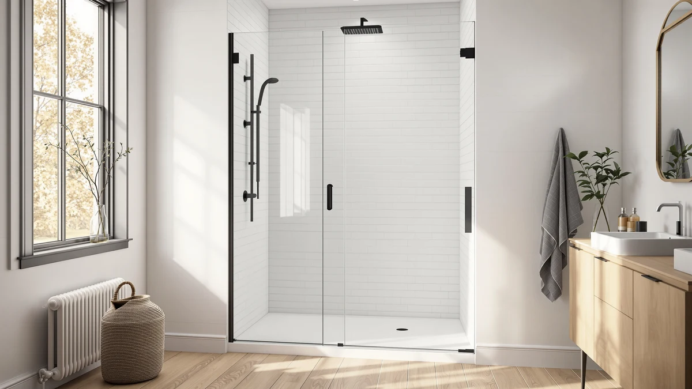

Neo Angle Shower Door Review (2026): Worth It?
Prices and picks verified as of October 2026. Independent, reader-supported reviews.


Quick Answer
Our neo angle shower door review found the Noirpierre 34" D the strongest all-around pick: a matte black pivot enclosure with a 304 stainless steel frame and 6mm SGCC tempered glass, priced at $309.99. It fits a 36 x 36-inch corner shower pan and ships without a base, so confirm your pan size before you order.
Our pick: Neo-Angle Shower Door 34" D, $309.99 Check Price on Amazon
Bottom line: our top pick is the Neo-Angle Shower Door 34" D x 34" W x 72" H at $309.99.
Things to Know Before You Buy
- Neo-angle doors are built for corner showers with an angled front panel, so they need a corner pan or enclosure, not a standard rectangular tub.
- Most neo-angle doors, including the Noirpierre 34" D, ship without a base. Budget for a pan separately or confirm your existing one matches the listed footprint.
- Glass thickness in this category runs 1/4 inch (6mm) across every model we compared, so the real differences come down to frame material, finish and accessing width.
- Stainless steel hardware, like the frame on the Noirpierre, resists corrosion better than coated aluminum over years of daily shower humidity.
- Reversible installation (left or right hand opening) is standard on the Noirpierre, Morandie and ENSO SENKA doors, which gives you flexibility if your plumbing is on one side.
This neo angle shower door review exists because corner showers punish guesswork. A rectangular door won't fit an angled pan, and the online listings rarely explain which frame material, accessing width or installation side actually matters once the box is on your bathroom floor. Measure wrong and you end up returning a heavy glass panel, which is a shipping headache nobody wants.
We researched four neo-angle and corner pivot doors currently sold for US bathrooms and compared their published specs, materials and prices side by side. The Noirpierre 34" D came out ahead on frame durability and finish quality for the price, but the Morandie, ENSO SENKA and Findepot models each solve a different corner or space problem, and we break down who should pick which one below. None of these doors include a shower base, so factor that into your total remodel budget before you commit to a corner layout.
Why You Should Trust Us
Ilane Tall covers bathroom fixtures and renovation hardware for Best Shower Doors, with a focus on how glass enclosures hold up to daily humidity and cleaning. For this neo angle shower door review, Ilane pulled manufacturer specs, construction materials and current Amazon pricing for every model, then weighed them against the practical demands of a corner shower install: fit tolerance, hinge durability and glass safety ratings.
We do not run a fake testing lab and we do not claim to have installed these doors ourselves. Every comparison below is built from published measurements and materials data, and we flag honest tradeoffs wherever the specs point to one.
How We Compared
For this neo angle shower door review, we lined up the Noirpierre against three corner and pivot alternatives using the specs each manufacturer publishes: glass thickness, frame material, accessing width and footprint. We cross-checked those numbers against current Amazon pricing to see which doors deliver the most durable build per dollar, and we excluded anything that didn't list a clear size range or hardware grade.
We also looked at installation details that rarely show up in a product title, like whether the hinge is reversible, whether the glass carries a safety film, and whether the bottom rail is designed to channel water back into the pan. Those details decide how a door performs in daily use far more than the headline dimensions do. A door with a sloped, leak-resistant bottom rail, for example, keeps your bathroom floor dry in a way that a flat rail design cannot match, regardless of how good the glass looks on day one.
Overview & Specs

Neo-Angle Shower Door 34" D
What we like
- 304 stainless steel frame, handle and top channel resist corrosion better than the painted aluminum used on cheaper corner doors.
- 6mm SGCC tempered glass with an explosion-proof film adds a safety layer most budget neo-angle doors skip.
- Easy-clean glass coating cuts down on soap scum buildup between cleanings.
Flaws but not dealbreakers
- No shower base included, so you need a compatible 36 x 36-inch pan already in place or budgeted separately.
- At 34 inches deep, it suits compact corner footprints and won't fit a wider 40-plus-inch stall.
| Material | — |
| Size | 34"W x 72"H |
The Noirpierre is the model we'd point most shoppers to in this neo angle shower door review. It measures 34 inches deep by 34 inches wide by 72 inches tall, with a 22 3/16-inch accessing width once the pivot panel swings open. The frame, handle and top channel are built from 304 stainless steel, a grade that holds up to years of shower humidity better than the coated aluminum found on several competing neo-angle doors.
The glass is 1/4-inch (6mm) SGCC tempered glass with an explosion-proof film layered on, which matters for a door that lives in a wet, high-traffic corner. Noirpierre's listing also calls out an easy-clean surface designed to resist water stains and soap scum, a detail that lines up with what buyers of similarly coated glass doors in this category report: less scrubbing between regular cleanings. The tradeoff is fit flexibility. At a fixed 34-inch footprint and no included base, this door works best when your corner shower pan is already sized to match, or when you're planning the pan purchase around it.
What We Liked
The build quality is the best in the field we compared for this neo angle shower door review. A full stainless steel frame, rather than a painted aluminum one, is the kind of spec most listings bury in the bullet points, and it is the main reason the Noirpierre holds up as a long-term pick rather than a replace-in-three-years one. Stainless steel also resists the pitting and rust spots that painted frames develop once the coating wears thin near the hinges.
The 6mm SGCC tempered glass with an added explosion-proof film also puts this door ahead of several corner-shower competitors that use the same glass thickness without the safety film layer. For a door that sits in a wet, high-traffic corner of your bathroom, that extra layer is a meaningful difference even though it rarely shows up in a product photo. The matte black finish hides water spots and mineral buildup better than the bright chrome and brushed nickel finishes used on most of the alternatives here, which makes it a practical choice beyond its looks.
What Could Be Better
No neo-angle shower door is perfect, and the Noirpierre has two real drawbacks worth weighing before you buy. The biggest limitation is that Noirpierre ships this door without a shower base. If you are starting a bathroom remodel from scratch, that means pricing a compatible 36 x 36-inch corner pan on top of the $309.99 door, which pushes the total project cost higher than the listing price suggests. Shoppers who skip that step often discover the mismatch only after the box arrives.
The fixed 34-inch depth is also a constraint rather than a flaw, but it rules this door out for anyone with a larger or irregular corner opening. If your existing stall runs wider than 34 inches, the ENSO SENKA sliding door covers more ground; we go over that tradeoff in the alternatives section below. The listing also doesn't specify a warranty period, so you may be on your own for a hardware replacement down the line.
Who Is It For?
This neo angle shower door review points the Noirpierre at homeowners replacing an aging corner enclosure who already have, or are willing to install, a 36 x 36-inch shower pan. The stainless steel frame makes the most sense if you plan to keep the door in place for a decade or more, since that is where the extra durability over a coated aluminum frame pays off. It also suits anyone who wants a matte black finish that matches darker hardware elsewhere in the bathroom, like a black shower head or towel bar.
Skip it if your bathroom has a non-standard corner opening, a wider walk-in stall, or if you need the base bundled into one purchase. Renters and anyone doing a quick, budget-first swap will likely get more value from one of the alternatives covered next, since none of them demand the same fixed footprint.
Alternatives to Consider
The Noirpierre won't fit every corner, so we also compared three doors that solve different problems in this same neo angle shower door review: a matching neo-angle design in a larger size, a sliding door for wider walk-in showers, and a lower-priced pivot door for straight-wall installs.

Editor’s Pick
Neo-Angle Corner Shower Door 36"
Same neo-angle layout as the Noirpierre but sized for a 36-inch corner opening, with the same SGCC tempered glass and safety film. Choose this one if your pan runs a size larger than 34 inches. We cover it in full in our Neo-Angle Corner Shower Door 36" review.
$309.99
Check Price on Amazon
Best Value
ENSO SENKA 56-60" W x
A bypass sliding door, not a neo-angle, built for 56 to 60-inch openings with trimmable top and bottom rails. Pick this one if your walk-in shower is wider than a corner stall and you want to avoid a swinging panel entirely. At $284.99 it's also the second cheapest door in this comparison.
$284.99
Check Price on Amazon
Premium Choice
Frameless Pivot Shower Door 33-34"
A straight-wall pivot door, not a neo-angle, built for a 33.6 to 34.4-inch opening with the same 6mm tempered glass as the pricier picks here. It adds a double-sided nano coating and bottom and side seal strips, and at $239.99 it's the cheapest door in this lineup.
$239.99
Check Price on AmazonFrequently Asked Questions
Does the Noirpierre neo-angle shower door need a shower base?
No. The Noirpierre 34" D door ships without a base, so it's meant to pair with a shower pan you already own or buy separately. Measure your pan's opening before ordering, since neo-angle doors only fit pans cut for that angled corner shape.
Can a neo-angle shower door be installed on either side?
The Noirpierre and the Morandie alternative both support reversible installation, so you can configure the pivot hinge for a left or right opening. Check the listing's size chart first, since the accessing width changes depending on which side you choose.
Is a frameless pivot door better than a sliding shower door?
Pivot doors like the Noirpierre and Findepot swing open on hinges and tend to look cleaner in a small corner, while sliding doors like the ENSO SENKA cover a wider opening without needing floor clearance to swing. Choose pivot for compact corners and sliding for wide walk-in showers.
Final Verdict
This neo angle shower door review comes down to one clear recommendation: the Noirpierre 34" D is the best all-around neo-angle pick for most corner showers, thanks to its stainless steel frame, 6mm safety glass and matte black finish at $309.99. Buyers who need a larger footprint should look at the Morandie 36" version, and anyone without a corner pan at all will get more flexibility from the ENSO SENKA sliding door or the budget-priced Findepot pivot door. Whichever one you choose, confirm the pan size and accessing width against your own bathroom measurements before you order, since a few inches is the difference between a clean install and a costly return.